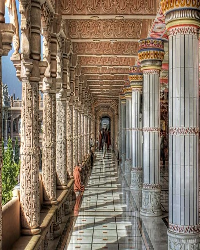
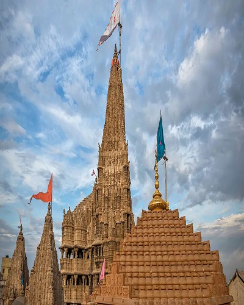
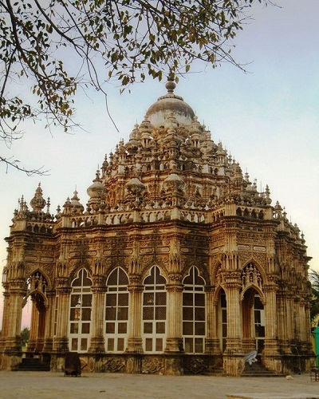
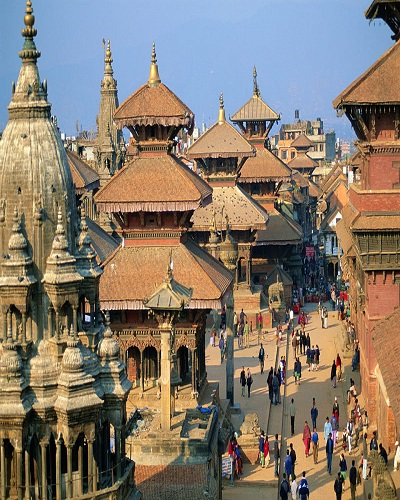
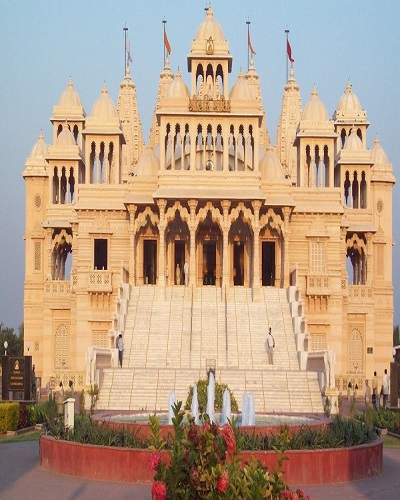
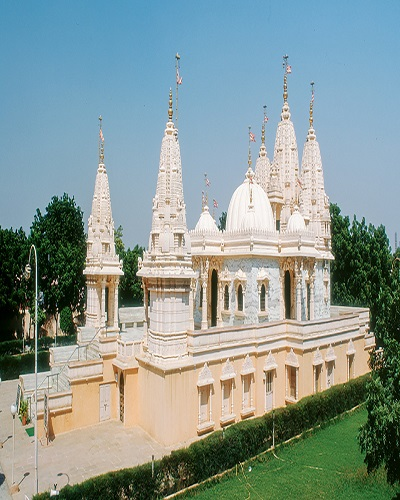
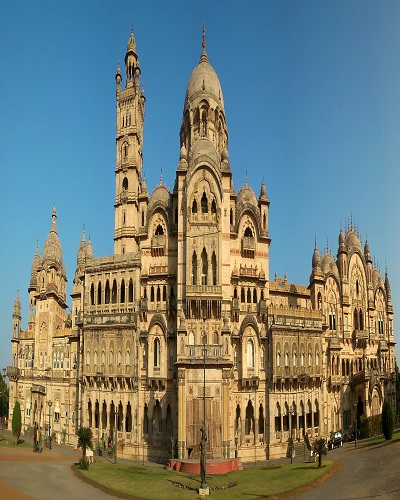
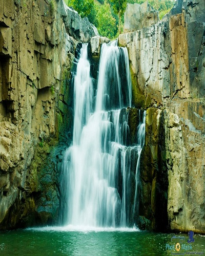

October to March is the best time to visit Ahmedabad as the weather becomes mild and pleasant to road around the city.Read More
Ahmedabad

Bhuj
Winter(November – March) is the best time to visit Bhuj. The temperatures are moderate, ranging from 8 - 35 degrees Celsius.Read More
Bhuj

Dwarka
The ideal time to visit Dwarka is from November till the last of February when the city experiences cold winters.Read More
Dwarka
Gir National Park
As the protected area remains closed from June to October, the best time to visit Gir is in winter, from November to March.Read More
Gir National Park

Junagadh
The best season to visit Junagadh is winter therefore. Winters are the best time to visit Junagadh. October, November, December and January are the months of winter.Read More
Junagadh
Kutch
Winters(October to February) are the best time to visit Kutch. The temperature during these months is between 25 to 12 degrees Celsius and makes the weather perfect for sightseeing. This is also the best time to visit Rann of Kutch Festival.Read More
Kutch

Patan
October to April is the best time to visit Patan, as the weather would be pleasant and not as humid and dry.Read More
Patan

Porbandar
October to March is Best Season to Visit PorbandarRead More
Porbandar
Somnath Temple
September to March are the best months to visit Somnath, as the winters are quite cold.Read More
Somnath Temple

Surat
The best season to visit Surat is the winter season. The temperature remains comfortable and is apt for sightseeing. The best months to visit are October, November, December, January and February. Winters approach Surat in November and lasts till February.Read More
Surat

Vadodara
October- December & January to March is the ideal time to visit Vadodara.Read More
Vadodara

zarwani waterfalls
The best time to visit Zarwani Waterfalls is in months of November to February. The temperature in these months is within the range of a moderate 20 to 30 degrees.Read More